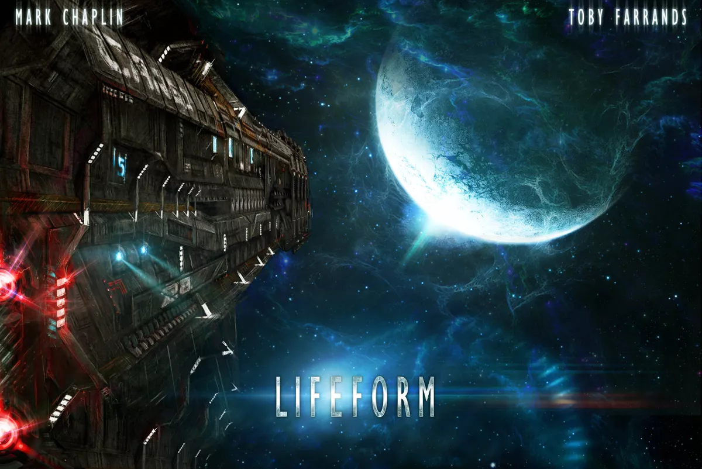

Incoming Transmission
+++
Mayday, Mayday! This is the ISMV Valley Forge - comms systems failing, scanners malfunctioning… one of us is missing Several of the crew are also claiming to have seen an alien lifeform. Ore-payload canister M-CXC-3790 ruptured when taken for processing. Doctor Chandra claimed it cracked like an egg before she vanished (possible space psychosis). Request advice, and rescue boat. Comms out.
+++++
Message Appended- Received 24/09/2195
+++++
Oh god! Two of us are dead, and two are still missing. We've got to get out of here! The captain has ordered Palmer to prime the auto-destruct. It mustn't get back! Save our souls.
Game Overview
Lifeform is a game of survival horror for two to four players in which one player takes on the role of an almost invincible, utterly hostile alien, while all other players take on the roles of the crew of commercial mining starship, Valley Forge. During each game, the crew, outfitted with glitchy handheld sensors disrupted by a proximate nebula, search their labyrinthine vessel for equipment, weaponry, and supplies to load onboard escape shuttlecraft Remora. Along the way, the alien lifeform will ruthlessly attempt to stop the crew from carrying out this plan.
Game Info
Requirements
- Players: 2-4
- Playtime: 60min
- Ages: 10+
Game steps
- Gather supplies
- Get to the Remora
- Escape!
- ???